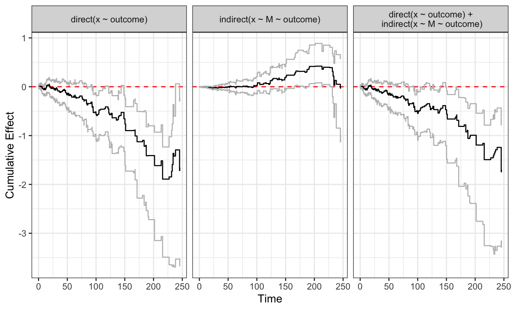
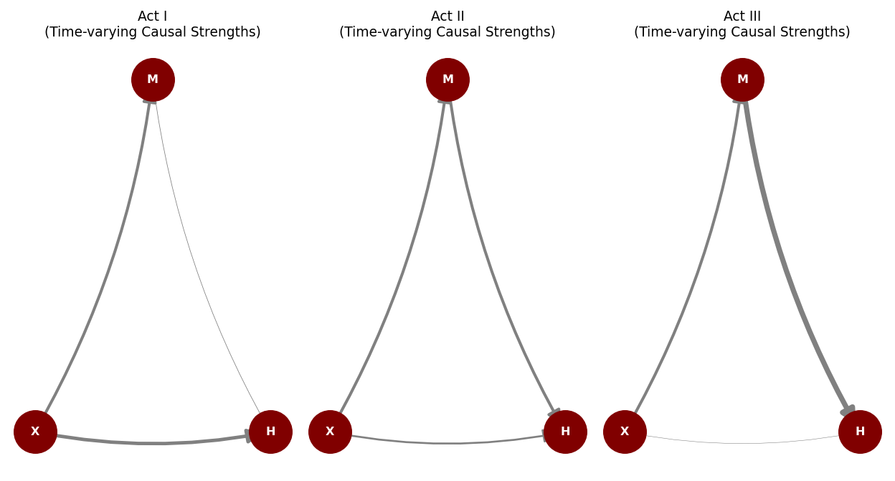
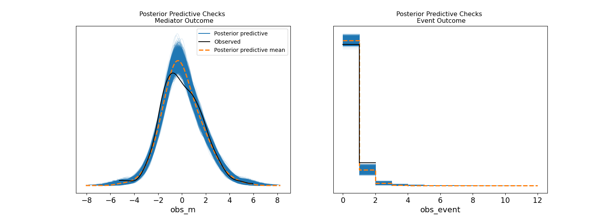

The Journey Is the Model
Bayesian Dynamic Path Analysis in PyMC
Data Science @ Personio
and Open Source Contributor @ PyMC
2026-06-14
Preliminaries
Who am I?
- I’m a data scientist at Personio
- Bayesian statistician,
- Reformed philosopher and logician.
- Website: https://nathanielf.github.io/

Link to my website
Code or it didn’t Happen
The full worked example can be found on my blog
“Most causal inference treats time as a container.
What if time is the medium?”
The Pitch
Survival analysis answers when.
Causal inference answers whether.
Dynamic path analysis answers how the answer changes.
A single endpoint is a snapshot. The process is the model.
Agenda
- What your endpoint analysis cannot see
- The Bayesian DPA model: three technical moves
- From process to estimand: g-computation and the symmetry argument
Act I: What You’re Missing
A Concrete Problem
A patient starts an exercise programme.
It reduces cardiovascular risk directly. Good.
But it also causes joint inflammation. The inflammation increases risk over time.
At the six-month endpoint, the treatment looks modestly protective.
You have no idea it’s being undermined.
What the Decomposition Reveals

Three panels. Three stories your endpoint missed.
The Structure: A Sequence of DAGs

The arrows don’t just exist. They strengthen and weaken over time.
Act II: How to See It
Three Technical Moves
1. Discretise time into bins. Piecewise constant hazards.
2. Smooth with B-splines. Coefficient paths evolve without jumping.
3. The Poisson bridge. A full generative likelihood, not a partial one.
Move 1: Discretise Time
The data is long-format: one row per subject per interval.
# Each row: who was at risk, for how long, what happened
df["dt"] = df["stop"] - df["start"]
bin_idx = df["bin_idx"].values # discrete time index
# The hazard is now piecewise constant within bins
# but free to vary across binsTime is no longer continuous background noise. It’s a covariate.
Move 2: Smooth with Splines
# Random walk prior on spline coefficients
beta_raw = pm.Normal("beta_raw", 0, 1, dims=('splines', 'tv'))
coef_alpha = pt.cumsum(beta_raw * sigma_smooth, axis=0)
# Construct smooth time-varying functions
alpha_0_t = pt.dot(basis, coef_alpha[:, 0]) # baseline
alpha_1_t = pt.dot(basis, coef_alpha[:, 1]) # direct effect
alpha_2_t = pt.dot(basis, coef_alpha[:, 2]) # mediator effectThe cumulative sum is a random walk. Adjacent coefficients are probably similar. The data decides how much they differ.
Move 3: The Poisson Bridge
\[d_{it} \sim \text{Poisson}(\lambda(t)), \quad \lambda(t) = Y_{it} \cdot \Delta t \cdot f(\text{linear predictor})\]
Binary events are counts capped at 1.
The baseline hazard becomes an explicit parameter, not a nuisance to be conditioned away.
The Joint Model
Mediator equation:
\[M_t = \beta(t) \cdot X + \rho \cdot M_{t-1} + \epsilon\]
The mediator has inertia. Its dynamics are modelled, not assumed away.
Hazard equation:
\[\lambda(t) = f\big(\alpha_0(t) + \alpha_1(t) X + \alpha_2(t) M_{t-1}\big)\]
Direct and indirect paths, both time-varying.
These are estimated simultaneously. One likelihood, one posterior.
The Softplus Link
\[f(x) = \ln(1 + \exp(x))\]
Ensures the hazard is always positive. Smooth. Differentiable. MCMC-friendly.
This is not Aalen’s identity link. The path decomposition is approximate on the hazard scale.
That’s fine. The decomposition is diagnostic. The estimand lives elsewhere.
Diagnostics: Does the Model Fit?

Left: mediator model fits. Right: event model fits. The generative model is internally coherent.
Act III: What It Tells You
The Path Decomposition
These time-varying coefficients show which channel dominates when:
- Direct effect: protective throughout
- Indirect effect: inert, then harmful after day 100
- Total effect: attenuated
This is the model’s internal mechanics.
The structure of mediation, not the magnitude.
But mechanism is not yet an estimand.
G-Computation: The Bridge
# World 1: everyone treated
pm.set_data({'trt': np.ones(n)})
idata_trt1 = pm.sample_posterior_predictive(
idata, var_names=['Lambda', 'obs_m', 'obs_event'])
# World 0: nobody treated
pm.set_data({'trt': np.zeros(n)})
idata_trt0 = pm.sample_posterior_predictive(
idata, var_names=['Lambda', 'obs_m', 'obs_event'])Two counterfactual worlds. Same population. Same model.
The mediator evolves naturally under each intervention.
The Survival Contrast
The causal estimand:
\[\bar{S}_{\text{treated}}(t) - \bar{S}_{\text{control}}(t)\]
Computed by:
- Individual hazard trajectories for each posterior draw
- Transform to survival: \(S_i(t) = \exp(-\Lambda_i(t))\)
- Average across individuals
- Compare
Defined interventionally.
Estimated processually.
Full posterior uncertainty.
The same model generates both counterfactual worlds.
. . .
Modeling choices affect both equally.
. . .
What survives in the difference is the causal signal.
What the Practitioner Does
The treatment reduces events by ~17% overall.
But: the direct effect gives ~25% reduction. The mediator claws back ~8%.
The next intervention targets the mediator after day 100.
Without the decomposition, you’d report “modest benefit” and stop.
With it, you know exactly where to push next.
A Decision Rule
If your treatment effect is constant over time and you don’t care about mechanism:
Cox is fine.
If your effect changes over time, or you suspect a mediator whose influence evolves:
This is the model.
How to tell the difference: plot Schoenfeld residuals. If they trend, you have time-varying effects. If you also have a candidate mediator, you have a dynamic path problem.
What We Built
1. A working Bayesian DPA in PyMC. It didn’t exist before.
2. The g-computation bridge from process to estimand. dpasurv stops at the decomposition. We go to counterfactual survival curves.
3. Diagnostic transparency. PPCs, LOO, sensitivity analysis. The frequentist version doesn’t offer these.
The journey is the model.
The destination is the estimand.
The Bayesian implementation gives you both.
Thank You
Resources
- Blog post: nathanielf.github.io
- PyMC: pymc.io
- Fosen et al. (2006), “Dynamic path analysis,” Lifetime Data Analysis
- Aalen (1989), “A linear regression model for the analysis of life times,” Statistics in Medicine
Dynamic Path Analysis | PyData London 2026